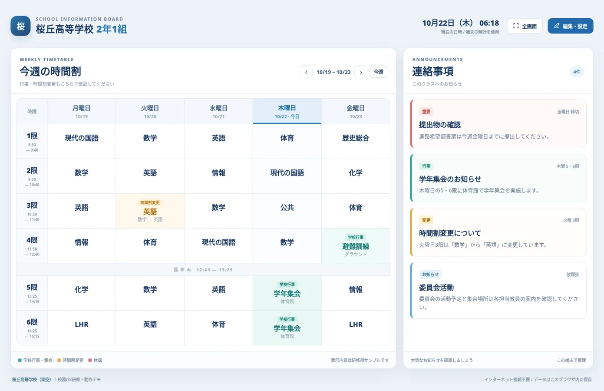
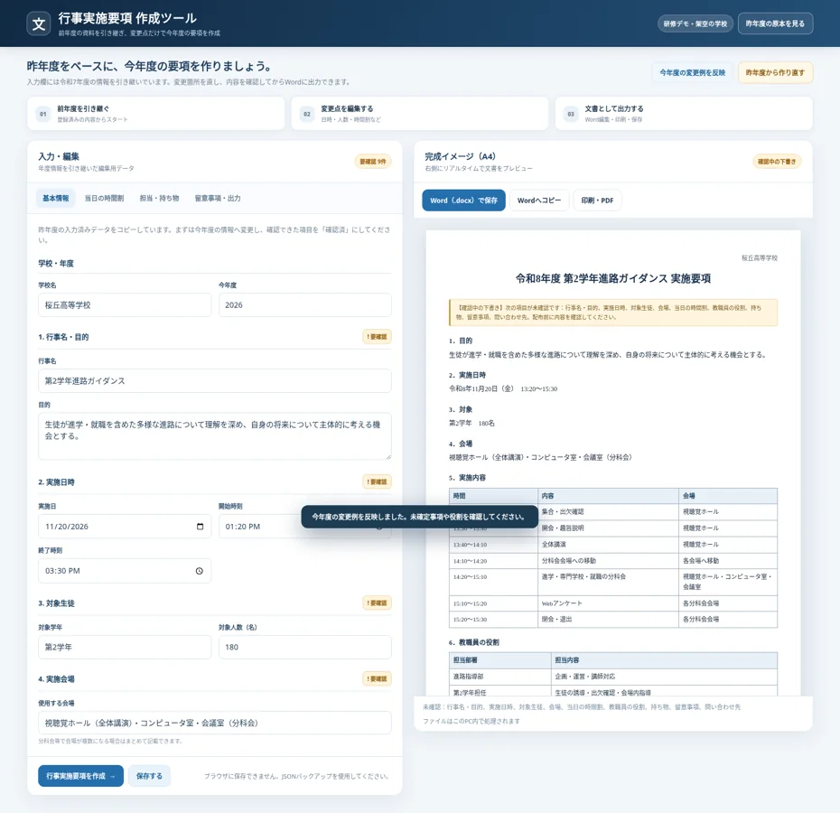

SECTION 03｜講師実演教室用電子掲示板
各教室向けの時間割と連絡事項を表示します。授業・学年集会・時間割変更を編集できます。
高校教職員向け 校内研修 2026年10月22日
スライドの閲覧、実演用Webアプリの操作、ワーク資料のコピーをこのサイトから行えます。研修中はこのページを開いたままご利用ください。
手元でも全35枚を閲覧できます
いずれも研修用の架空データです

SECTION 03｜講師実演各教室向けの時間割と連絡事項を表示します。授業・学年集会・時間割変更を編集できます。

SECTION 04｜講師実演昨年度の入力済みデータを更新して今年度版の要項を作成します。Word出力も試せます。
生成AIに依頼して、単一のHTMLファイルで動くWebアプリを作成したチャットの記録です。
外部サイト（ChatGPT）に移動します。共有リンクは公開されている範囲の内容を閲覧できます。
AIと一緒に作ったアプリの紹介
授業中のコメントが先生の画面に届く、双方向の授業参加アプリです。生徒として参加する場合は、先生から案内されたROOM IDを入力します。
外部サイトに移動します。授業に参加するにはROOM IDが必要です。
必要な資料をコピーできます
会議メモ、昨年度要項、今年度変更事項、JavaScript自動入力デモ用コードを掲載しています。
会議メモの整理、行事要項作成、校務改善の相談に使える指示文をコピーできます。
練習用フォームに一括入力する例です。実際の校務システムでは実行しないでください。